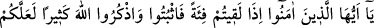
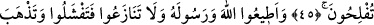
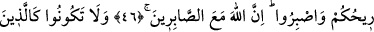
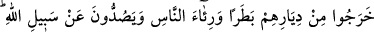
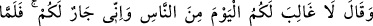
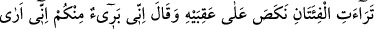
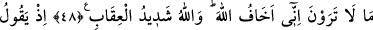
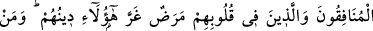
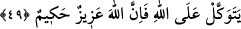

SAVAŞTA BAŞARININ SEBEPLERİ
45. Ey îman edenler, (savaşmak için) bir toplulukla karşılaştığınız zaman sebat
edin ve Allah’ı çok anın ki başarıya erişesiniz.
46. Allah’a ve Rasûlü’ne itaat edin, birbirinizle çekişmeyin. Sonra korkuya
kapılırsınız da devletiniz (gücünüz) gider. Bir de sabredin. Çünkü, Allah
sabredenlerle beraberdir.”
47. Çalım satarak, insanlara gösteriş yaparak ve Allah yolundan alıkoymak üzere
yurtlarından çıkanlar gibi olmayın. Allah, onların yaptıklarını kuşatmıştır.
48. O zaman şeytan onlara yaptıkları işi süsledi (güzel gösterdi) de, “Bugün
insanlardan size galip gelecek kimse yoktur, şüphesiz ben de sizin yanınızdayım.”
dedi. Fakat iki topluluk birbirini görünce ardına döndü ve “Ben sizden uzağım, ben
sizin görmediklerinizi görüyorum, ben Allah’tan korkarım, çünkü Allah’ın cezâsı
şiddetlidir.” dedi.
49. O zaman münafıklar ve kalblerinde hastalık bulunanlar, “Bunları dinleri
aldatmış.” diyorlardı. Halbuki kim Allah’a dayanırsa, şüphesiz Allah dâimâ galib,
hüküm ve hikmet sâhibidir.
“Ey îman edenler,” kâfir “bir toplulukla karşılaştığınız” yüz yüze gelip savaştığınız
“zaman sebat edin” bozulup dağılmayın. Çünkü onlarla karşılaşma çoğunlukla savaşta
olur. Onlar ancak kâfirlerle savaşıyorlardı.
Bir hadiste söyle buyurulmuştur: “Düşmanla karşılaşmayı temennî etmeyin. Onlarla